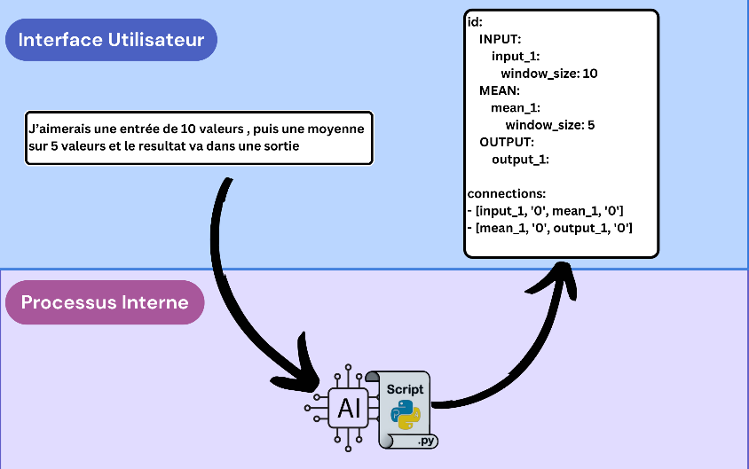
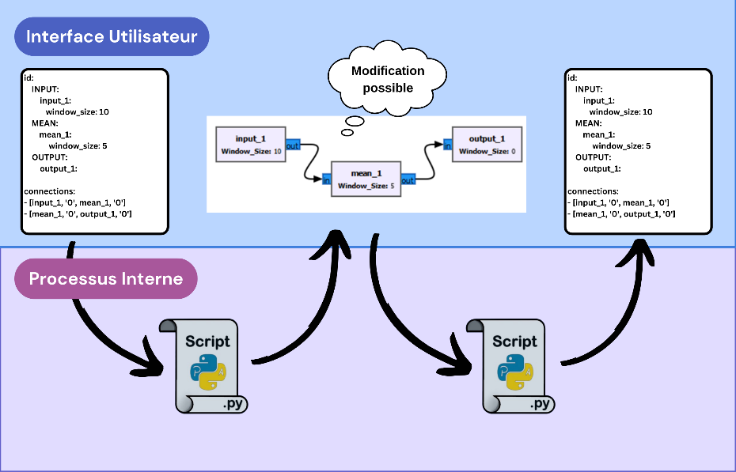
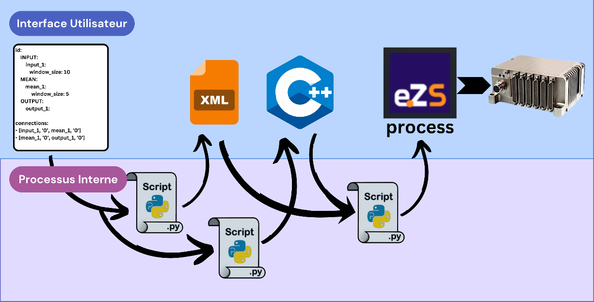
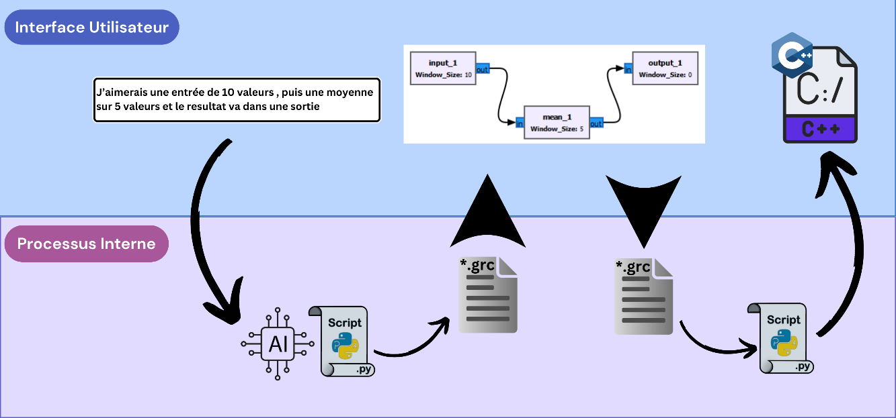

The context
I spent three years as an R&D apprentice in the innovation team of Safran Data Systems. The company makes flight-test instrumentation, the equipment that records data during the test flights of new aircraft.
One of its products is a modular acquisition system called XMA. One of its modules, the OBP, is a small on-board computer. It can convert raw sensor values into physical units, run frequency analyses, or keep only the important data before it is sent to the ground.
One example shows why this matters. When engineers study how a wing vibrates, the wing can be damaged if it stays too long at its resonant frequency. Usually the data is sent to the ground, analysed there, and then the pilot is told to slow down. That takes time. If the analysis runs on board, the alarm can reach the pilot much faster.
The problem
The OBP is powerful, but it has to be programmed in C or C++. Most flight-test engineers do not write C. So a very useful tool stays out of reach for the people who need it.
My project was a proof of concept to change that. The idea was to let engineers describe what they want in plain English, and to turn that description into a program for the OBP.
The constraints
Three constraints shaped the design.
The first is confidentiality. Test data and programs are sensitive, so a cloud service like ChatGPT was not an option. The language model had to run locally, on a company machine. This limited us to models of about 8 billion parameters.
The second is reliability. A language model is never fully predictable. A small change in the request can change the answer. In flight testing, a random bug is not acceptable. So I decided that the model would only understand the request. It would never write the code itself.
The third is control. The engineer must be able to see what will run on the aircraft, and change it if needed.
How it works
The chain has three parts.
First, the engineer types a request, for example "take one input, compute the average over five values, and send the result to an output". A local language model turns this sentence into a structured file that lists the processing blocks and how they are connected. To make this reliable, the model receives a prompt with a few examples of requests and correct answers before each question.

Second, the blocks open in GNU Radio, an open-source tool that shows processing chains as connected blocks. The engineer can check them and edit them. If the model got the request 90% right, the engineer fixes the last 10% by hand instead of asking again.

Third, a Python script turns the blocks into C++ code. To keep this generation simple and safe, I wrote a small C++ library where each type of block is a class. An input, an average or a maximum each has its own class, and each block passes its results to the next one. The script also writes the configuration file that describes the inputs and outputs. The code is then cross-compiled for the ARM processor of the OBP and loaded with Safran's configuration software.

I also built a simple desktop interface that brings the three parts together, with a log window to find errors quickly.

The results
The complete chain works, from a sentence to a program running on the OBP.

The choice of model made a big difference. A small model gave the right answer only 30 to 40% of the time and took about a minute per request on an office computer. A Llama 3 model on a more powerful workstation reached 90 to 95% with a better prompt, and answered in 3 to 5 seconds.
This work led to a paper that I co-authored at ETTC 2025, the European Test and Telemetry Conference, where I presented it.
What I learned
At the start, I chose Blockly, a block library written in JavaScript. I spent days learning a language that added nothing to the project. GNU Radio was already based on blocks and written in Python, like the rest of the project. Switching saved the proof of concept.
The main lesson is to build the simplest chain that works from start to finish first, even with hard-coded values and no interface. Then you improve it one piece at a time. I also learned to ask for help sooner instead of staying stuck for days.
When an intern joined the project, I split it into three independent parts so he could work on one without knowing the others. With hindsight, the task I gave him was too big for two weeks, and I would plan it differently today.
Limits
This work is a proof of concept. It supports only a few blocks and covers one or two of the main uses of the OBP. The code generation should be made more robust, and the tool needs to be tested with real users.
During the same apprenticeship I also designed FPGA logic for real-time current and voltage acquisition on flight-test equipment.